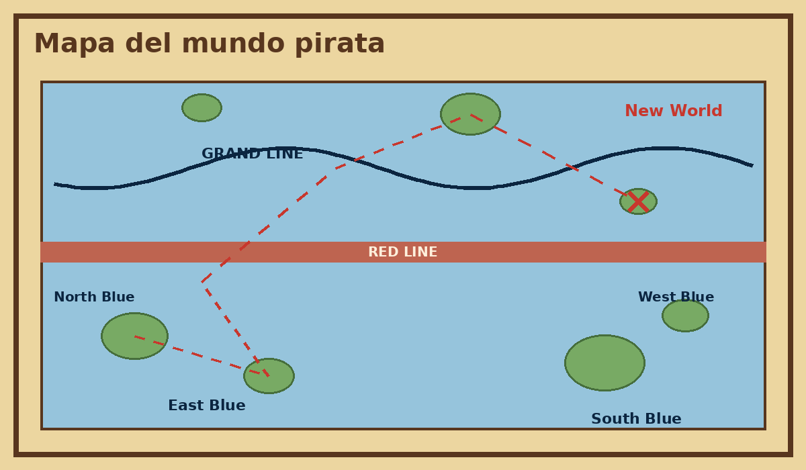
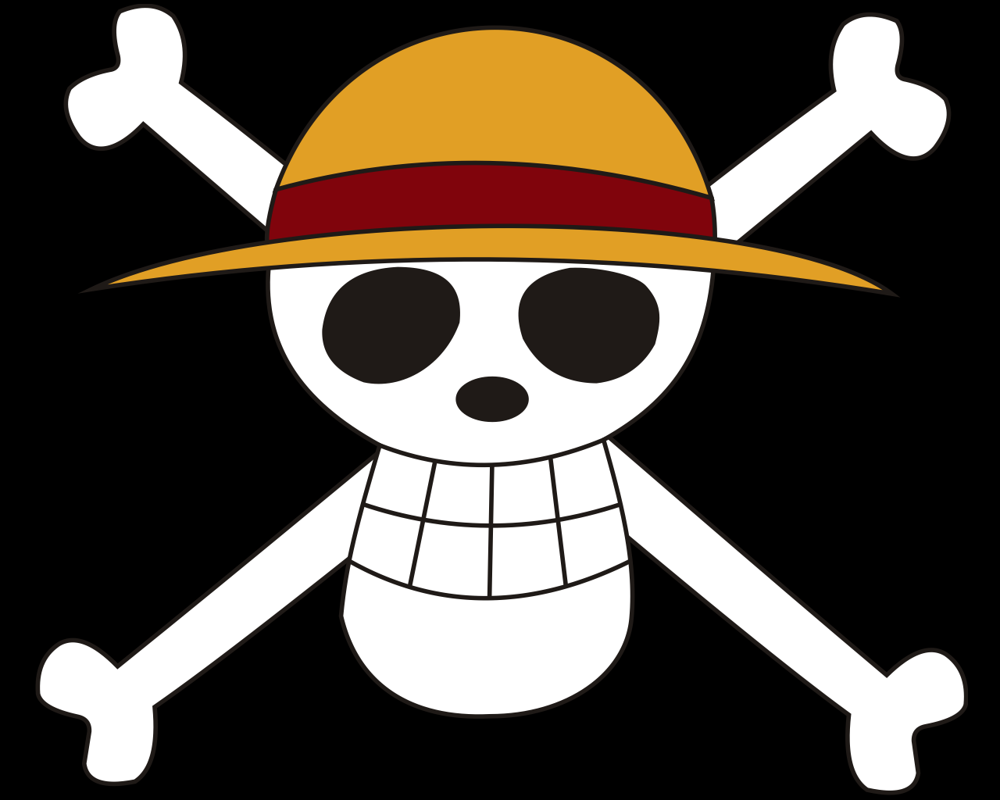

La historia de One Piece
One Piece es un manga creado por Eiichiro Oda que se publica en la revista Weekly Shōnen Jump desde 1997. Su adaptación al anime, producida por Toei Animation, comenzó en 1999 y se convirtió en una de las series más longevas y queridas del mundo.
La historia sigue a Monkey D. Luffy, un joven que come una Fruta del Diablo y obtiene un cuerpo de goma. Su sueño es convertirse en el Rey de los Piratas, y para lograrlo debe encontrar el tesoro legendario conocido como el One Piece.
En su viaje reúne a la tripulación de los Sombrero de Paja, enfrenta a la Marina y a otros piratas, y descubre secretos del mundo. El mensaje central es que los sueños se persiguen con valentía y con amigos leales.



Lo esencial
El sueño
Ser el Rey de los Piratas: el pirata más libre del mar.
El viaje
Recorrer los cuatro mares y el Grand Line hasta llegar al Nuevo Mundo.
La tripulación
Compañeros que se apoyan entre sí y persiguen sus propios sueños.